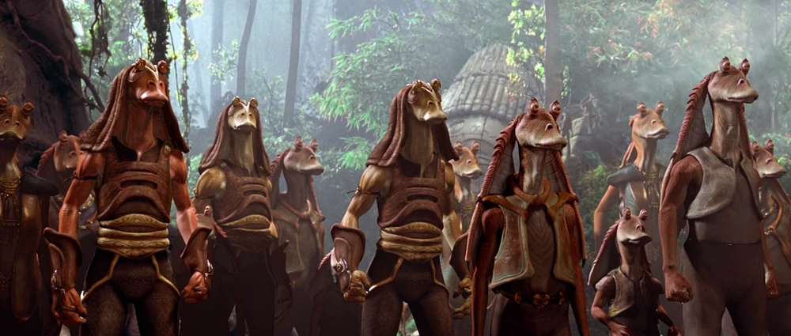

Naboo era un planeta abundante en el Borde Medio, cerca de la frontera de los Territorios del Borde Exterior. Fue el hogar de la especie gungan y de una población de humanos conocida como los Naboo.
Naboo era un pequeño mundo pastoral en el Borde Medio, ubicado cerca de la frontera de los Territorios del Borde Exterior. A diferencia de la mayoría de los otros mundos, el antiguo planeta carecía de un núcleo fundido, y en su lugar comprendía un conglomerado de cuerpos grandes y rocosos que formaban una red de túneles y cuevas inundadas. Los nativos gungans, que construyeron sus hogares en las aguas de Naboo, rara vez se aventuraban en el núcleo, temiendo a las voraces bestias marinas que residían en áreas como las Cuevas de Eleuabad. A pesar de esto, ciertos navegadores gungans utilizaron rutas comerciales tradicionales a través de la estructura del planeta, que sirvieron como las vías más convenientes para llegar a otras áreas del mundo. El interior de Naboo era rico en plasma, una energía natural única en el planeta, y esto junto con su falta de núcleo fundido le dio a Naboo una reputación de enigma para los astrofísicos, quienes consideraban la estructura del mundo como un fenómeno extremadamente raro en la galaxia. La superficie de Naboo comprendía una gran variedad de paisajes diferentes, desde llanuras onduladas y colinas cubiertas de hierba hasta lagos pantanosos causados por la red llena de túneles de aguas profundas. Además de sus características naturales, Naboo era considerado un mundo de belleza clásica debido a la estética de sus centros de población. El plasma natural de la corteza porosa era cosechado para energía y material de construcción, y generalmente se pensaba que era la clave de muchos de los secretos del planeta. Si bien la mayoría de los animales terrestres de Naboo eran pacíficos, como lo demuestra el gentil shaak, los océanos del planeta estaban repletos de criaturas amenazadoras, como el asesino marino opee y el monstruo acuático sando.
Naboo estaba habitado por dos sociedades: una especie indígena de anfibios inteligentes llamada gungans, y un grupo de humanos pacíficos a los que se refería como los naboo. En el pasado distante, un malentendido cultural resultó en una seria disputa entre los gungans y los colonos humanos. Ambas partes se negaron a reconocer sus responsabilidades en la grieta, y los dos grupos se aislaron el uno del otro por mucho tiempo. Esa situación duró hasta que la Invasión de Naboo realizada por la Federación de Comercio obligó a los humanos y a los gungans a unir sus fuerzas.